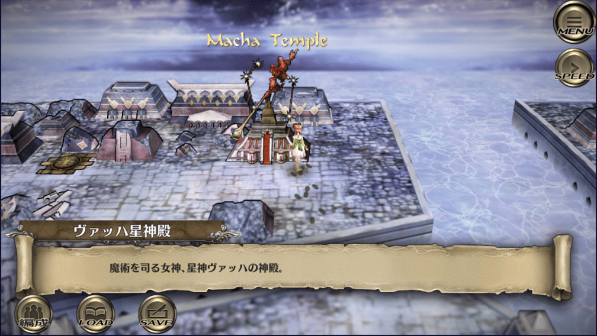
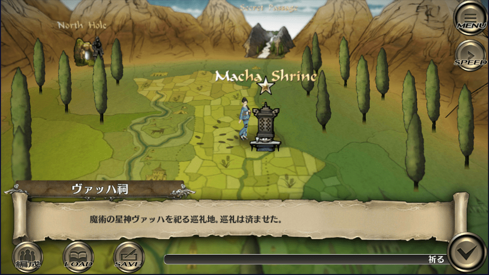

ヴァッハ神
サガスカ内でのヴァッハ神
アスワカンの神殿：

ヤクサルトの祠：

※Macha Temple / Macha Shrine と表記されている。後述の「名前の由来」のところに記載しているが、古アイルランド語でヴァハと呼ばれているが、ケルト神話内ではマッハ（Macha）と表記される。
何となくヴァッハ神と言えばクリムゾンフレアというイメージがあるのでとりあえずクリムゾンフレアの動画。
火行術最上位術「クリムゾンフレア」
こちらは塔の動画
金行術最上位術「塔」
2021年7月16日に実装されたロマサガRSのヴァッハ神によるクリムゾンフレア＋と塔のエフェクト
ロマサガRSの塔はファスト効果が付いていますが、サガスカではファストではありません。サガスカでは術を使うには数ターンの詠唱が必要なのですが、ヴァッハ神が使用する術は詠唱１ターンで使用してきます。
後に載せていますが、生田さんは、これを表現するためにファストを付けたのかな？と推測しています。
ロマサガRSの塔のエフェクトは、サガスカとサガフロの塔のエフェクトを足して２で割ったような感じですかね。
↓この動画はサガフロの塔。
ロマサガRSのドットはかなり原作に忠実に作られている。
ヴァッハ神のこの気絶時のドットは、サガスカでヴァッハ神倒したときのこれを再現してるのか#ロマサガRS #サガスカ pic.twitter.com/fQo9C4BqNB
— sagamax (@sagamax__) July 16, 2021
ヴァッハ神の詠唱ポーズの比較。
— sagamax (@sagamax__) July 18, 2021
うーん凝ってる。。。#ロマサガRS #サガスカ pic.twitter.com/P2vci0vCjS
ヴァッハ神の恩寵
| 名前 | 分野 | 恩寵 | 恩寵の内容 |
|---|---|---|---|
| ヴァッハ神 | 魔術 | ヴァッハの眩耀（げんよう） | 味方全体のHPを大幅に回復し、各種ステータスアップの効果を与える。 あらゆる恩寵と同じ条件で発生する可能性がある。 |
開発関係者のツイート
河津さんのツイート
#サガスカ #サガスカーレットグレイス #緋色の野望 #どんなゲーム
— 河津秋敏 (@SaGa30kawazu) June 25, 2018
その22. 魔術の星神ヴァッハ
華麗に白黒赤青黄の五精霊を操る魔術の女神様です。五精霊を表す星が星座を象り、精霊のバランスが崩れると星の明るさが変わると言われています。無骨な武神マリガンとは仲が良くありません。 pic.twitter.com/nBZCZgUZ1d
生田さんのツイート
まずはヴァッハ神！
— 生田泰浩（ゲーム開発者） (@y_ikuta) July 18, 2021
河津さんの話か設定かで、遊びに来たくらいの感じでバトルになる、のように聞いてた気がします。
バトルボイスは生田が書いた初稿「遊びに来たよ！」がそのまま採用。
ちなみにロードオブヴァーミリオンのボイス原稿はたぶん河津さんで、こっちは「遊びに来ちゃったよ～」でした。 pic.twitter.com/1mqotm3ln6
ヴァッハ神
— 生田泰浩（ゲーム開発者） (@y_ikuta) July 18, 2021
河津さんの設定で白黒赤青黄の5色の星が特徴とあったはず。
企画時にデザイナーと、浮かせよう、星は髪２つと両足と杖で５ついこうよ、等と話した覚えがあります。
あがったアートを見た河津さんは魔法少女だねーみたいなリアクションだった記憶 pic.twitter.com/sdrEW9AyUJ
ヴァッハ神
— 生田泰浩（ゲーム開発者） (@y_ikuta) July 18, 2021
バトルは、倒した像に対応する術系統は、魔術の神特別待遇で、詠唱長い術も1ターンで撃ってきます。
ファストキャスト的なイメージで、ロマサガRSの塔にファストつけたのかな？
アビリティでラウンド開始時とかに使う術がファストになる等にしてほしかったというのはやり過ぎでしょうね pic.twitter.com/nqjqjZMePl
ヴァッハ神から
— 生田泰浩（ゲーム開発者） (@y_ikuta) January 30, 2022
12星神は恩寵でパーティ支援しますが
初期案は他の星神で小回復、ヴァッハは大回復＋バフみたいな圧倒的格差がありました
小回復には状態回復を付ける等はしたものの
「星神は平等ではなくヴァッハはより強い四大星神の一柱」設定や
「格差ええやん」の声もあり
強さは保たれました！ pic.twitter.com/dDMS0OpMww
ヴァッハは魔術の神として全系統の術を使うバトルの他に
— 生田泰浩（ゲーム開発者） (@y_ikuta) January 30, 2022
火術しか使わない不死鳥の影響を受けたバトル
木術しか使わない木の大精霊の影響を受けたバトル
があるため、プレイヤーにはクリムゾンフレアと召雷のイメージが強いかも
RSで土術とか土杖に縛られている感じは本望じゃないでしょうねｗ pic.twitter.com/XMLgc6jT58
ヴァッハ神の名前の由来
マリガン神の元ネタであるモリガンの妹ヴァハから。
参考
余談ですが、マリガン神の名前はケルト神話のモリガンという神に由来しており、モリガンはヴァハの兄です。マリガン神はヴァッハ神の兄ということでしょうか・・・。
モリガン
モリガン（Mórrígan）とは、北アイルランド（アルスター地方）の、破壊、殺戳、戦いの勝利をもたらす戦争の女神。モリグー（Morrígu）、またはモーリアン（Morríghan）とも。支配や権力を神の姿にした存在だと考えられており、予知と魔術で戦いの勝敗を支配するケルト神話の戦女神の一柱。
参考
モリガンの妹ヴァハ
マッハ（Macha）は、ケルト神話に伝わる戦いの三女神の一柱。正確には古アイルランド語でヴァハと呼ばれ、その名は「戦」、または「怒り」を意味する。 「赤い鬣（たてがみ）のマッハ（Macha Mong Ruad）」または「赤毛のマッハ（Macha Dearg）」と呼ばれることもある。
馬、戦い、豊饒、および主権を司ると言われる。赤い髪に真っ赤なドレスとマントに身を包み、赤い一本足の馬に引かせた戦車で戦場を駆け巡り、戦士達を戦闘の狂気の渦へ導くとされている。モリガンが魔法の他に槍を用いて戦うのに対し、マッハは常に魔法のみを用いて戦う。戦死者の首を食べるとされ、敵の首を門に飾るケルトの風習は「ヴァハの木の実の餌」と呼ばれ、彼女への供物だといわれている。
参考
参考にした記事
Switch版サガスカ

PS4版サガスカ

緋の天啓

サントラ